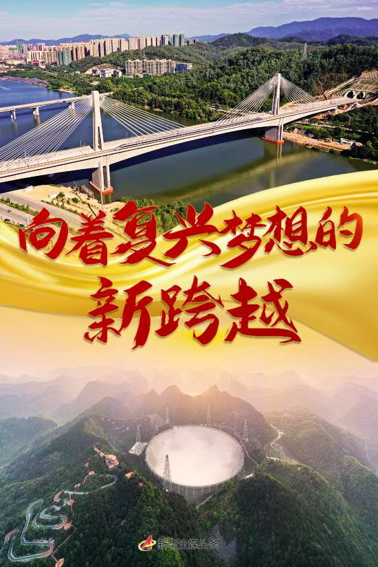
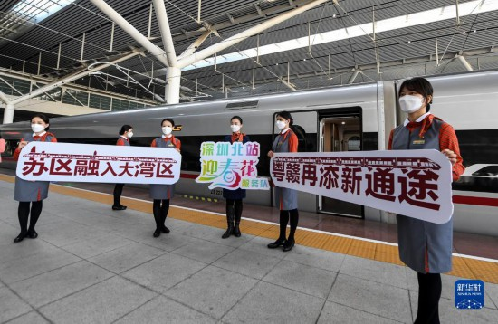
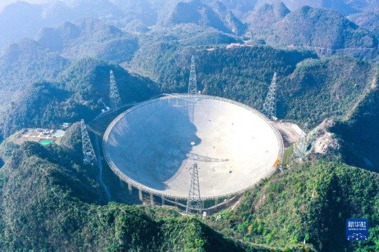
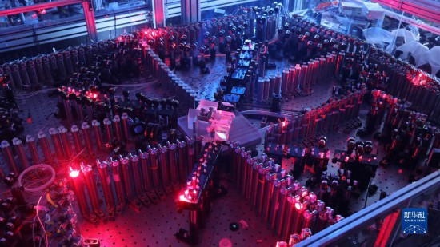
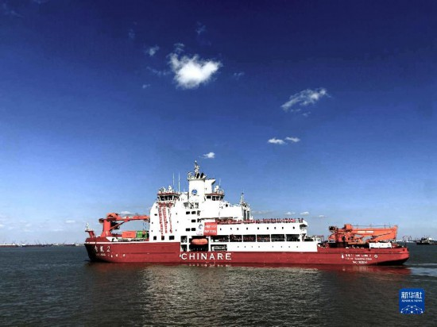
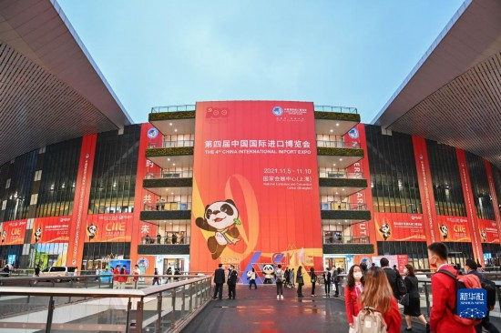
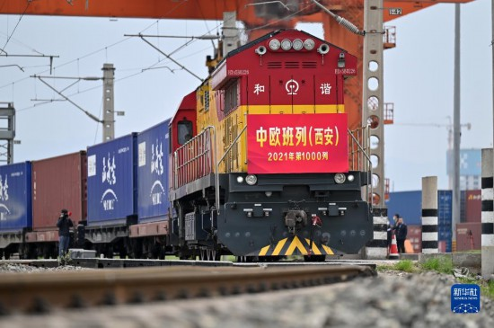
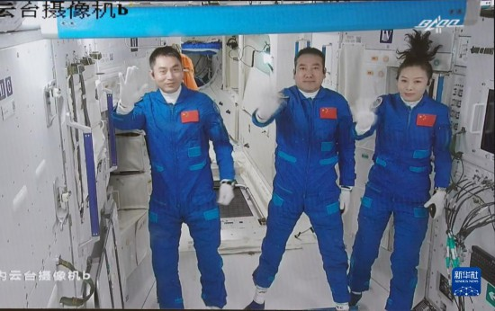
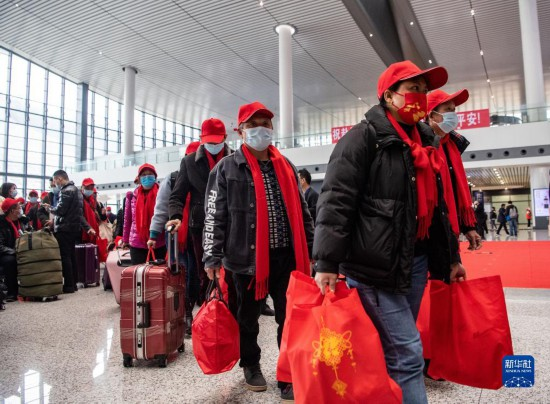
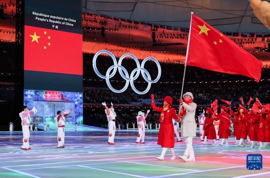

新华社北京2月17日电 题：向着复兴梦想的新跨越——新时代中国经济社会发展述评
开栏的话：
历史照亮未来，奋斗成就伟业。
党的十八大以来，以习近平同志为核心的党中央领导全党全军全国各族人民砥砺前行，全面建成小康社会目标如期实现，党和国家事业取得历史性成就、发生历史性变革，彰显了中国特色社会主义的强大生机活力，党心军心民心空前凝聚振奋，为实现中华民族伟大复兴提供了更为完善的制度保证、更为坚实的物质基础、更为主动的精神力量。中国共产党和中国人民以英勇顽强的奋斗向世界庄严宣告，中华民族迎来了从站起来、富起来到强起来的伟大飞跃。
即日起，新华社开设“奋进新征程 建功新时代”栏目，全面展现新时代中国发展成就，展望在新的历史起点上砥砺奋进、谱写新篇的光明前景，汇聚起全面建设社会主义现代化国家、实现中华民族伟大复兴中国梦的强大力量。
新华社记者谢希瑶、魏玉坤、刘红霞、孙飞
这是举世瞩目的中国奇迹：经济快速发展，社会长期稳定。
这是自信自强的历史跨越：国家经济实力、科技实力、综合国力跃上新台阶。
逐梦而行，风雨兼程。
砥砺奋进新时代，面对纷繁复杂的国内国际形势和各种风险挑战，以习近平同志为核心的党中央团结带领全党全国人民，拼搏奋斗、勇毅前行，推动经济社会发展取得历史性成就、发生历史性变革，为实现中华民族伟大复兴提供了更为坚实的物质基础。中国共产党和中国人民在自己选择的道路上昂首阔步，底气更足、信心更坚定。
新气象，迈进现代化新征程
新年伊始，列车在刚建成不久的赣深高铁上飞驰，在老区与特区之间跑出振兴发展的“加速度”；“东数西算”工程正式全面启动，贵州、宁夏、甘肃等西部地区将构建数字时代“经济新版图”；全国最大淡水湖鄱阳湖首次迎来细嘴鸥这群“新客人”，长江生态环境持续改善……
今日中国，无数时代风景线，气象万千。
党的十八大以来，中国经济总量从50万亿元量级跃至114万亿元，多年对世界经济增长贡献率超过30%，历史性告别绝对贫困，全面建成小康社会，开启全面建设社会主义现代化国家新征程。

2021年12月10日，深圳北站工作人员在赣深高铁深圳北站开往南昌西站的首班列车前留影。新华社记者 毛思倩 摄
综合国力显著增强，新时代中国加速奔跑——
连续多年稳居世界第二大经济体、第二大消费市场、制造业第一大国、货物贸易第一大国、外汇储备第一大国。
经济结构持续优化。2012年第三产业增加值占GDP比重首超第二产业，2021年达到53.3%；内需贡献率有7个年头超过100%；高技术制造业占比从2012年的9.4%提高到2020年的15.1%；中国创新指数全球排名从2013年的第35位跃升至2021年的第12位……
高水平科技自立自强节节攀升。“嫦娥五号”探月；“天问一号”落火；“中国天眼”对全球开放；中国空间站开启“有人长期驻留”新阶段；自主建造的“雪龙2”号挺进极地；“九章二号”量子计算原型机问世，求解特定问题比超算快亿亿亿倍……
民生福祉不断增进，幸福生活成色更足——
现行标准下农村贫困人口近1亿人全部脱贫；全国居民人均可支配收入超3.5万元，中等收入群体持续扩大；义务教育入学率接近100%；基本医疗保险覆盖超过13.5亿人，基本养老保险覆盖超10亿人……

2021年12月19日拍摄的“中国天眼”全景（维护保养期间摄，无人机照片）。新华社记者 欧东衢 摄
发展为了谁？怎样发展？
2012年11月15日，刚刚当选中共中央总书记的习近平给出有力回答：“人民对美好生活的向往，就是我们的奋斗目标。”
党的十八大以来，从决战决胜脱贫攻坚到全面推进乡村振兴，从实现全面小康到迈向共同富裕，让人民群众共享发展成果成为我们党推进经济建设的出发点和落脚点，绘就人民幸福生活的美丽画卷。
完善覆盖全民的社会保障体系、健全有利于更充分更高质量就业的促进机制、强化反垄断和防止资本无序扩张、扩大保障性住房供给、建设蓝天白云绿水青山的美丽中国……
党的十八大以来，以习近平同志为核心的党中央始终把高质量发展同满足人民美好生活需要紧密结合起来，不断提升百姓的获得感、幸福感、安全感。
走近世界舞台中央，开放的中国动能澎湃——
疫情防控处于世界领先水平，经济社会发展稳步提升，营商环境持续改善，中国大市场的吸引力与日俱增。
上海日前举行新年首场外资项目集中签约仪式，53个外资项目集中签约，投资总额达到54.4亿美元。签约项目中，有21个投资超过1亿美元。
参加签约仪式的蔡司大中华区首席财务官、数字转型官马克礼还表达了将要参展第五届中国国际进口博览会的计划，“过去四年，通过进博会的窗口，我们深刻感受到了中国市场的动能。”

2020年12月4日，中国科学技术大学宣布该校潘建伟等人成功构建76个光子的量子计算原型机“九章”，这是光量子干涉实物图。新华社发
世界经济寒潮下，进博会、服贸会、广交会、消博会等国际经贸盛会吸引全球目光，“一带一路”朋友圈不断壮大，中欧班列昼夜奔驰，疫苗国际合作持续推进……开放的中国为世界经济复苏注入强劲动能和浓浓暖意。
外媒评论，中国是引领世界经济增长的“可靠火车头”之一。
新作为，于变局中开新局
“如何战胜疫情？如何建设疫后世界？”
直面这一重大问题，2022年1月17日，习近平总书记在北京出席2022年世界经济论坛视频会议时深刻作答：“我们要善于从历史长周期比较分析中进行思考，又要善于从细微处洞察事物的变化，在危机中育新机、于变局中开新局”。

2020年11月10日，中国第37次南极科学考察队乘坐“雪龙2”号极地科考破冰船从上海起航，奔赴南极执行科学考察任务，这是“雪龙2”号极地科考破冰船驶离码头。新华社发（中国极地研究中心供图）
问题是时代的号角。
党的十八大以来，我们党不断直面时代挑战、回答时代课题，始终把稳航行方向。
顶住疫情“压力测试”，诠释殷殷为民初心——
全球知名公关咨询公司爱德曼发布的《2022年度爱德曼信任晴雨表》显示，2021年中国民众对政府信任度创10年来最高水平，达91%，在28个受访国中名列榜首。
这份信任源自“一个都不放弃”的坚强保护。
把人民群众生命安全和身体健康放在第一位，从百岁老人到新生婴儿，不放弃每一个生命。“为了保护人民生命安全，我们什么都可以豁得出来！”总书记的话语重若千钧。
这份信任源自对经济稳定复苏的底气与信心。
从“率先控制疫情”“率先复工复产”“率先实现经济增长由负转正”到稳健复苏经济发展，中国坚持不搞“大水漫灌”，防止资本无序扩张，继续实施积极的财政政策和稳健的货币政策，持续做好“六稳”“六保”工作特别是保就业保民生保市场主体，实现了较高增长、较低通胀、较多就业的优化组合。

2021年11月5日，人们在第四届进博会上参观。新华社记者 李响 摄
不断破解发展难题，开辟改革发展新境界——
时间回拨到2012年。
告别两位数的高增长，中国经济增速新世纪以来首次回落到8%以下。同期，长期积累的深层次结构性矛盾不断显现。
2012年12月，党的十八大后的第一次中央经济工作会议上，习近平总书记强调：“不能不顾客观条件、违背规律盲目追求高速度。”
此后，从判断我国经济发展处在“三期叠加”阶段到提出新常态，从贯彻新发展理念到推进供给侧结构性改革，再到明确从高速增长阶段转向高质量发展阶段……
“高质量发展不只是一个经济要求，而是对经济社会发展方方面面的总要求”“不是只对经济发达地区的要求，而是所有地区发展都必须贯彻的要求”……
我们党对经济形势进行科学判断，对发展理念和思路作出及时调整，引导我国经济社会平稳健康发展。
应对世界形势调整变革，加快构建新发展格局——
近年来，经济全球化遭遇逆流，国际经济循环格局发生深度调整。新冠肺炎疫情也加剧了逆全球化趋势，各国内顾倾向上升。

2021年4月13日，X9041次中欧班列（西安）从西安国际港站出发。这是2021年陕西开行的第1000列中欧班列。新华社记者 李一博 摄
建立以国内大循环为主体、国内国际双循环相互促进的新发展格局。“这是把握未来发展主动权的战略性布局和先手棋，是新发展阶段要着力推动完成的重大历史任务，也是贯彻新发展理念的重大举措。”习近平总书记鲜明指出。
深入实施扩大内需战略；围绕产业链部署创新链，围绕创新链布局产业链；推动制度型开放……发展动力源源迸发，改革开放向更高水平迈进。
7年时间，第6次扩围！
日前，伴随鄂尔多斯、景德镇、襄阳、喀什地区等27张“新面孔”上榜，至此我国跨境电子商务综合试验区已达132个，覆盖30个省区市，在全国范围形成陆海内外联动、东西双向互济的发展格局。
“虽然受到国内外经济环境变化带来的巨大压力，但中国经济韧性强、潜力足、长期向好的基本面没有改变，我们对中国经济发展前途充满信心。”习近平总书记的话，掷地有声。
新出发，步调一致向前进
仰望星空，中国航天正为人类探索宇宙奥秘、和平利用太空、推动构建人类命运共同体作出积极贡献。

2021年10月16日在北京航天飞行控制中心拍摄的进驻天和核心舱的航天员翟志刚（中）、王亚平（右）、叶光富向全国人民挥手致意的画面。新华社记者 田定宇 摄
全面建成并运营中国空间站，实施探月工程四期，深化载人登月方案论证，研制发射新一代载人运载火箭……未来五年，中国将在奔向星辰大海的征途上不断迈出高水平自立自强新步伐。
新出发，脚步铿锵，信心更足。
坚持和加强党的全面领导，沉着应对重大挑战——
2022年1月24日，习近平总书记主持中共中央政治局集体学习，主题是“努力实现碳达峰碳中和目标”。
力争于2030年前达到峰值，努力争取2060年前实现碳中和，立足于我国发展阶段和国情实际，标志着我国将完成碳排放强度全球最大降幅，用历史上最短的时间从碳排放峰值实现碳中和，面临前所未有的困难挑战，需要汇聚全党全国力量来完成。

2月16日，返岗务工人员在重庆西站候车厅排队前往检票口，免费乘坐复工专列前往广东省返岗务工。新华社记者 唐奕 摄
中央层面系统谋划、总体部署，构建碳达峰碳中和“1+N”政策体系，推进经济社会发展全面绿色转型，充分体现出加强党对一切工作的领导的要求不是空洞的、抽象的，要在各方面各环节落实和体现。
9年多来，一系列基础性、创制性、战略性举措相继出台，确保党始终引领中国航船沿着正确航向破浪前行。
9年多来，在应对风险挑战的实践中，规律性认识愈发清晰坚定——“必须坚持党中央集中统一领导，沉着应对重大挑战，步调一致向前进。”
推动制度和治理体系与时俱进，激发经济社会发展更大活力——
全面实行股票发行注册制改革、服务稳增长和高质量发展、推进制度型开放、风险化解处置、监管转型等，成为今年资本市场改革发展的关键词。
党的十八大以来，在习近平经济思想指引下，中国特色社会主义市场经济体制不断完善。
充分发挥市场在资源配置中的决定性作用，更好发挥政府作用，推动有效市场和有为政府更好结合；坚持“两个毫不动摇”，持续优化营商环境；完善宏观经济治理，更好服务实体经济……

2月4日晚，第二十四届冬季奥林匹克运动会开幕式在北京国家体育场举行。这是中国代表团在开幕式上入场。新华社记者 曹灿 摄
以制度创新推进国家治理体系和治理能力现代化不断取得新成效，“中国之治”正展现更加蓬勃的生机。
坚持以人民为中心的发展思想，凝聚起亿万人民的磅礴力量——
虎年第一个工作日，浙江召开高质量发展建设共同富裕示范区推进大会，部署新一年的“任务清单”。
“治国之道，富民为始。”共同富裕是社会主义的本质要求，是中国式现代化的重要特征。现在，已经到了扎实推动共同富裕的历史阶段。
一切为了人民，一切依靠人民。
作为新冠肺炎疫情发生以来首次如期举办的全球综合性体育盛会，北京冬奥会平稳举行，背后是无数人舍小家、为大家的付出。
脱贫攻坚战中，先后有300多万第一书记和驻村干部奋战在一线，有的甚至将生命永远定格在为之奋斗的土地上，“这就是中国力量”！
江山就是人民，人民就是江山。
党的十八大以来，我们党紧紧依靠人民战胜了一个又一个艰难险阻，办成了一件又一件大事，兑现了对人民的庄严承诺。
面向未来，越是接近民族复兴，越充满风险挑战，但我们坚信，有中国共产党的坚强领导，有亿万人民的团结奋斗，就有势不可挡的磅礴之力。
“今天，中华民族向世界展现的是一派欣欣向荣的气象，正以不可阻挡的步伐迈向伟大复兴。”习近平总书记的铿锵话语，彰显坚定信心和必胜力量。
 返回列表
返回列表